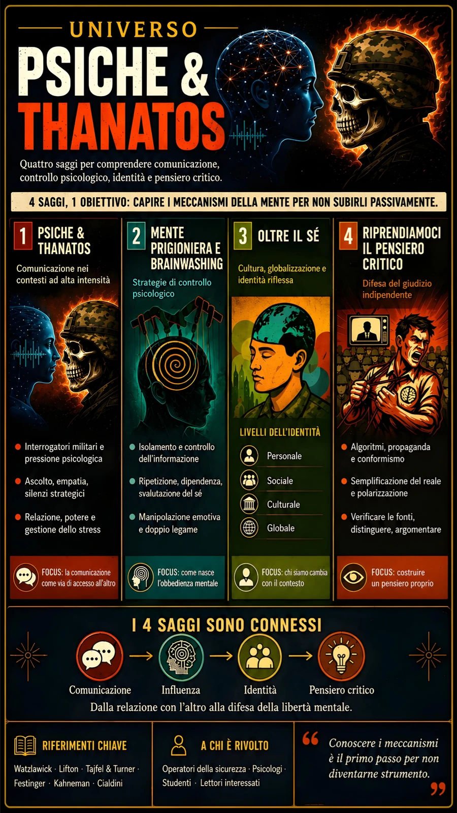
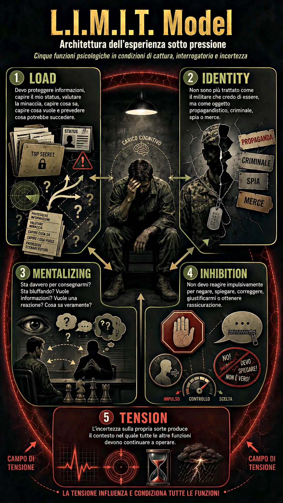

L’AUTORE / IL PROGETTO
Tommaso
Corona.
Ufficiale dell’Aeronautica Militare, formatore e autore. Un percorso tra esperienza operativa, psicologia e comunicazione.
Conosci il percorso ↓LIMITE & RELAZIONE
“Il significato nasce nella relazione.”
01
ESPERIENZA E FORMAZIONE
Il percorso dell’autore.
Dall’esperienza alla formazione
Nato a Taranto nel 1971, Tommaso Corona è Ufficiale dell’Aeronautica Militare con oltre trentacinque anni di esperienza in ambito operativo e formativo. Ha partecipato a missioni internazionali in Kosovo, Iraq e Afghanistan. In quest’ultima ha operato nell’ambito delle PSYOPS, ricoprendo l’incarico di Capo Sezione Analisi del Target Audience. Formatosi nel settore sia in Italia sia all’estero, è stato il primo appartenente all’Aeronautica Militare a qualificarsi come Specialista PSYOPS ed a svolgere missioni operative in tale ruolo anche fuori dai confini nazionali.
Svolge attività di docenza, training e coaching nell’ambito delle tecniche di interrogatorio militare, della resistenza psicologica e della gestione dello stress operativo, a favore del personale frequentatore dei corsi SERE (Survival, Evasion, Resistance and Escape/Extraction). Negli ultimi vent’anni ha approfondito le dinamiche comunicative e psicologiche applicate al public speaking, alle operazioni psicologiche, alla relazione interrogativa e ai contesti operativi ad alta pressione.
Il percorso accademico
Lauree
- Laurea magistrale in Scienze Politiche
- Laurea in Scienze Aeronautiche, nell’area delle Scienze della Difesa e della Sicurezza
- Laurea in Scienze e Tecniche Psicologiche
Master
- Master di II livello in «Contrasto al terrorismo internazionale: radicalizzazione, cyberjihad, intelligence e comunicazione strategica»
- Master di I livello in «Comunicazione, Scrittura e Storytelling»
- Master di I livello in «Coaching Umanistico e Programmazione Neuro-Linguistica»
Competenze e formazione specialistica
È Operatore Psico-Sociale della Croce Rossa Italiana, Operatore Internazionale di Diritto Internazionale Umanitario e qualificato Interrogatore di Personale Catturato.
Ha integrato il proprio percorso con una formazione specialistica nei campi della comunicazione strategica, della persuasione, della negoziazione, della comunicazione interculturale, della gestione delle crisi e delle operazioni informative. Corsi frequentati:
- Analisi dei fenomeni conflittuali non convenzionali e dei fattori di geopolitica
- Fenomenologia della Comunicazione
- Psicologia della Comunicazione
- Psicologia della Persuasione
- Gestione dei Conflitti e Ruoli Negoziali
- Crisis Communication Management
- Comunicazione attraverso le immagini
- Tecniche di Marketing e Pubblicità
- Post Conflict Rebuilding Management in ambito INFO OPS
- NATO PSYOPS Operational Planning Course, NATO School di Oberammergau (Germania)
DALL’ARCHIVIO DELL’AUTORE
Articoli e contributi in PDF
I testi originali, da leggere o scaricare. I PDF si aprono in una nuova scheda.

2021 · PDF · 4 pagine · 5,3 MB
Aquila Omnia: Diario di Bordo dei Fucilieri dell’Aria
L’operazione Aquila Omnia nel racconto dei Fucilieri dell’Aria.
02
COMUNICAZIONE · INFLUENZA · IDENTITÀ · PENSIERO CRITICO
Universo Psiche & Thanatos.
Ha pubblicato due articoli in ambito militare su Rivista Aeronautica, dal titolo “Cultural Awareness: Comunicazione e PSYOPS” (2012) e “Aquila Omnia: Diario di Bordo dei Fucilieri dell’Aria” (2021). È autore di diversi saggi raccolti nella collana Universo Psiche & Thanatos, tra cui “Psiche & Thanatos. Psicologia e Comunicazione Vs Coercizione negli Interrogatori Militari”, “Mente Prigioniera e Brainwashing: Otto Strategie di Controllo Psicologico nei Regimi Totalitari e nelle Sette”, “Oltre Il Sé: Cultura, Globalizzazione e Identità Riflessa” e “Riprendiamoci il Pensiero Critico: La polarizzazione ci sta disumanizzando”, nei quali sviluppa un approccio integrato tra psicologia, comunicazione e contesti operativi.


Ingrandisci il posterSAGGIO / 01
Psiche & Thanatos
Psicologia e Comunicazione Vs. Coercizione negli Interrogatori Militari
La scheda su AmazonSAGGIO / 02
Mente Prigioniera e Brainwashing
Otto Strategie di Controllo Psicologico nei Regimi Totalitari e nelle Sette
La scheda su AmazonSAGGIO / 03
Oltre Il Sé
Cultura, Globalizzazione e Identità Riflessa
La scheda su AmazonSAGGIO / 04
Riprendiamoci il Pensiero Critico
La polarizzazione ci sta disumanizzando
La scheda su AmazonI collegamenti portano alle schede dei saggi su Amazon e si aprono in una nuova scheda.
03
LE MAPPE DEL PROGETTO
Limite, relazione, pressione.
Due tavole per orientarsi tra i concetti di Limite & Relazione e le cinque dimensioni del L.I.M.I.T. Model.
Limite & Relazione
Il lessico del progetto: concetti fondamentali, cognizione sotto pressione, dinamiche relazionali e applicazioni operative. Una sintesi per leggere i collegamenti tra i temi dell’Atlante.
 Ingrandisci il poster
Ingrandisci il poster L.I.M.I.T. Model in SERE
Load, Identity, Mentalizing, Inhibition e Tension: cinque funzioni psicologiche nell’esperienza sotto pressione, osservate nel contesto della formazione SERE.


Ingrandisci il posterIl L.I.M.I.T. Model è una proposta teorica e formativa personale di Tommaso Corona, non ancora validata empiricamente. Le cinque dimensioni non costituiscono una sequenza di fasi.
Esplora la sezione L.I.M.I.T. Model →Esplora i concetti, i personaggi e le connessioni del progetto.
Torna all’Atlante